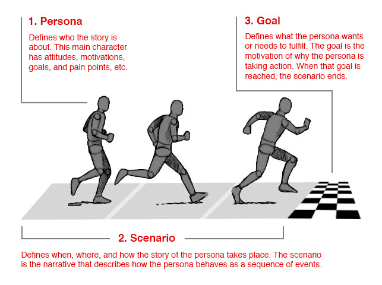

User Research and Personas
What is a persona?
Personas are fictional characters, which you create based upon your research in order to represent the different user types that might use your service, product, site, or brand in a similar way.
Why is it important?
- Help you to understand your users’ needs, experiences, behaviours and goals.
- Help you step out of yourself.
- Help you to recognise that different people have different needs and expectations.
- Help you to empathize with the user you’re designing for.
- Make the design task at hand less complex as they will guide your ideation processes.
- Help you to achieve the goal of creating a good user experience for your target user group
Types of personas
There are 4 different types of personas that can add value to your design project.
Goal Directed
- What does my typical user want to do with my product?
- Examine the process and workflow that your user would prefer to utilise in order to achieve their objectives in interacting with your product or service.
- There is an assumption that you have already done enough user research to recognise that your product has value to the user.
- By examining their goals, you can bring their requirements to life.

Role-Based
- Role-based perspectives are data-driven and incorporate data from both qualitative and quantitative sources.
- Focusses on the user’s role in the organisation. Our designs need to reflect upon the part that our users play in their organisations or wider lives.
- An examination of the roles that our users typically play in real life can help inform better product design decisions.
- Where will the product be used?
- What’s this role’s purpose?
- What business objectives are required of this role?
- Who else is impacted by the duties of this role?
- What functions are served by this role?
Engaging
- Perspective is rooted in the ability of stories to produce involvement and insight.
- Through an understanding of characters and stories, it is possible to create a vivid and realistic description of fictitious people.
- The purpose of the engaging perspective is to move from designers seeing the user as a stereotype with whom they are unable to identify and whose life they cannot envision, to designers actively involving themselves in the lives of the personas.
- Other persona perspectives are criticized for causing a risk of stereotypical descriptions by not looking at the whole person, but instead focusing only on behavior.
Fictional aka Proto
- Does not emerge from traditional user research but it emerges from synthesized real world observation.
- Based upon past interactions with the user base.
- Deliver a picture of what, perhaps, typical users look like. You may be able to use them as an initial sketch of user needs.
- *These personas can be deeply flawed.
- They allow for early involvement with your users in the UX design process, but they should not be trusted as truth for your development of products or services. The assumptions should be validated.
Building, Using and Iterating on Personas
- Collect data
- Analyze data and hypothesize
- Get feedback on conclusions. This is important to create organizational trust and buy in.
- Decide how many personas are needed for your project.
- Describe the persona
- include details about the user’s education, lifestyle, interests, values, goals, needs, limitations, desires, attitudes, and patterns of behaviour.
- Include some fictional personal details to make the persona a realistic character.
- Give your persona a name. "Sam the sales rep"
- Give your persona an image (not of someone you know, or a famous person - it could create bias)
- Prepare scenarios (problems the user faces that would trigger the need for your product)
- Get feedback on scenarios. This is important to create organizational trust and buy in.
- Share the persona. Decide how you will share with the company, and ensure it is accessible for future employees, externally etc.
- Build a culture where everyone creates scenarios, and personas are referenced company wide when talking about the product/website/app etc. (You do not want anyone be referring to personas as "the user".)
- Iterate. As new scenarios are written, new information will become available. This should be collaborative with anyone who is interacting with real users.
Takeaways
- Designing for everyone means that everyone is disappointed with the result.
- Designing for the "average" user typically does not work.
- Persona types can and should be combined to tell the best story.
- Persona should be based on real research. Even if you are starting out with a fictional / proto persona, the information should be validated and updated as you complete your research.
- Personas should not be based on individual people, people that you know, famous people, or yourself.
Assignment
Evaluation Critiera
| Value |
Learning Outcomes |
| # |
Interview Questions and Answers |
| # |
Person |
| # |
Person |